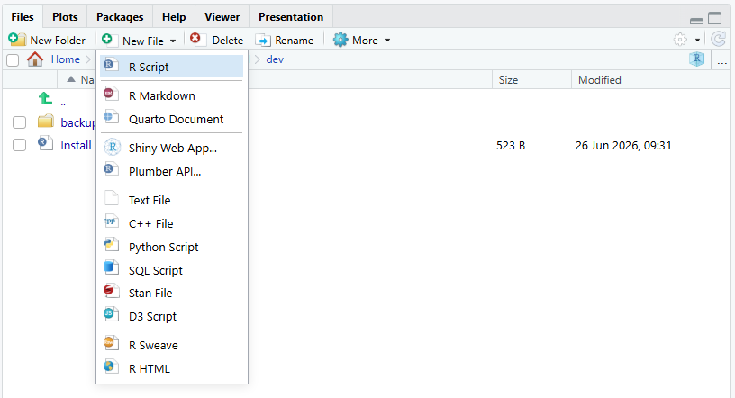
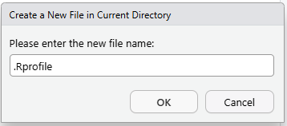
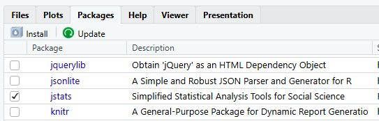

Loading jstats automatically
Once jstats is installed, you can have your Project load it for you every time it opens — so you never type library(jstats) by hand. It’s optional (typing the one line at the start of a session works perfectly well), but it takes only a couple of minutes to set up — and later on you can add other lines to the same file to handle other start-of-session tasks, like loading the data you’ll be working with. This uses a small setup file called an .Rprofile (a file R reads automatically when it starts).
The file lives in your Project folder, and the easiest place to create it is the Files tab in the lower-right pane, which shows that folder’s contents. Click New File and choose Text File:

RStudio asks for the file name. Type .Rprofile — the leading dot included, nothing after it — and click OK:

As long as you haven’t changed the save location, this puts your new .Rprofile in the right place — your Project folder, right next to the .Rproj file — and opens it in the Source pane. (There are other ways to create a text file, but this route is the most straightforward.)
If you chose R Script rather than Text File, RStudio adds a .R extension when the file saves — so a script saved under the name .Rprofile ends up on disk as .Rprofile.R, a name R never looks for, and nothing loads at startup. The fix is a rename: in the Files tab, check the box beside the file, click Rename, and remove the .R from the end. (Or check the box and click Delete, then start again with a Text File.)
Now copy and paste these lines into your new .Rprofile:
# To reinstall jstats (new computer, or after updating R) see the install
# code at: jma61.github.io/jstats-guides/install-jstats.html
library(jstats)Pasted in, the file looks like this:
.Rprofile×1# To reinstall jstats (new computer, or after updating R) see the install2# code at: jma61.github.io/jstats-guides/install-jstats.html3library(jstats)
The last line does the loading. The comment above it holds the address of the install page, so the reinstall instructions are one glance away on a new computer or after an R update.
Save — the disk icon at the top of the Source pane, or Ctrl+S (Cmd+S on a Mac) — and check that the tab reads .Rprofile, nothing more. (Picked up a .R on the end? The aside above has the fix.)
That’s it — now, every time you start a new RStudio session in this Project, jstats loads automatically. If you’d like to test it right away, restart R (Session menu, Restart R).
You’ll see it worked down in the Console: jstats announces itself with the same startup message you first met in jstats Quick Start — only this time you didn’t type anything to get it:
ConsoleTerminal×Background Jobs×jstats v0.9.103 is up to date. > |
The Packages tab shows it too: the checkbox beside jstats is ticked — RStudio’s sign that the package is loaded for this session:

Keep your .Rprofile to lightweight startup lines — loading a package, and later a setting or two. Do not put an install command (an install.packages("jstats", ...) line) in .Rprofile: because the file runs on every startup, an install line there tries to reinstall each time and can send RStudio into a loop. Installing is a one-off you run by hand; loading is the repeatable step that belongs in startup.
We’re keeping this minimal for now. Later you’ll add a line or two more — where your data lives, and how many digits to show in output — but this is plenty to start.
This .Rprofile lives inside your Project and applies only to this Project. That’s deliberate — it’s self-contained and safe to edit. There’s also a global, all-Projects version, but it’s better left until you’re juggling several Projects at once; the books cover it.